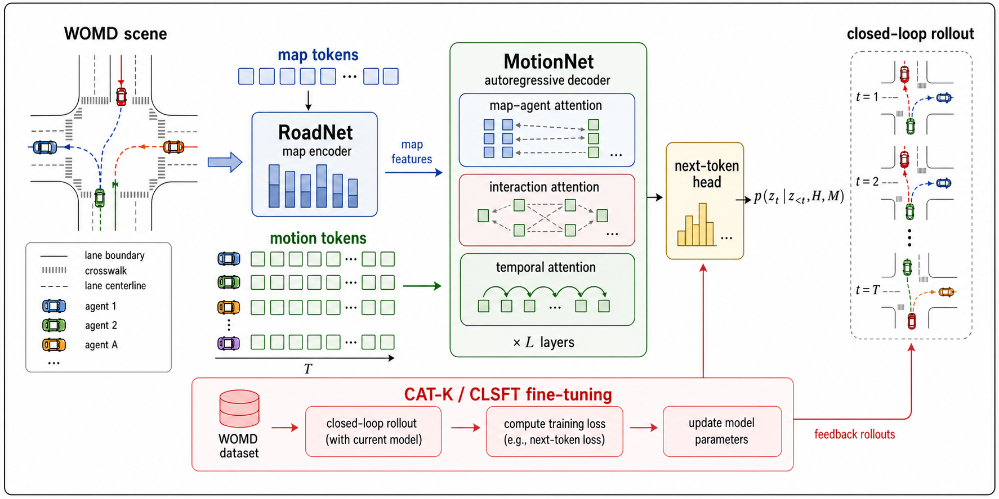
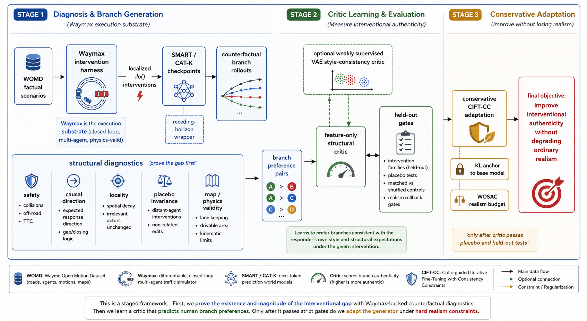
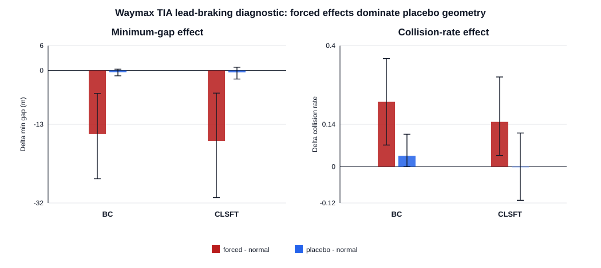
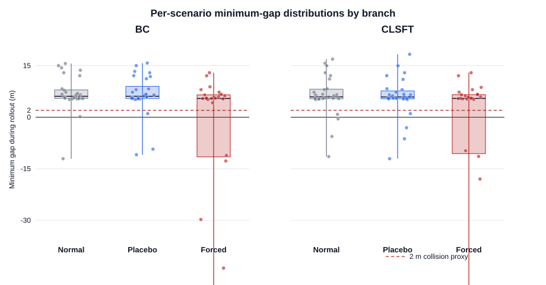
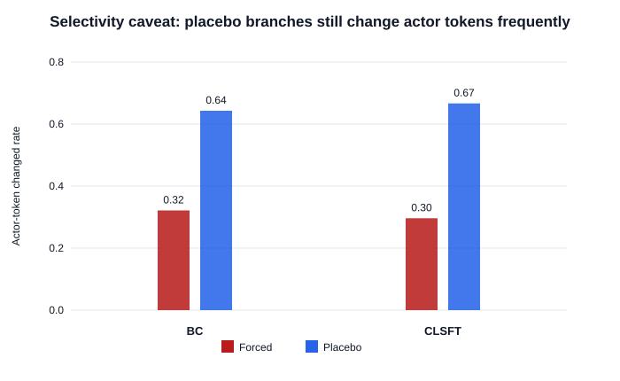
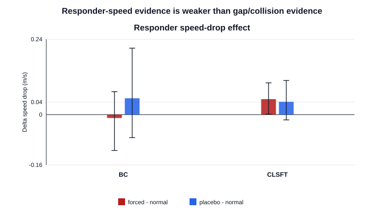
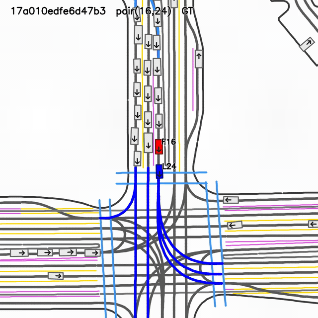

Counterfactual Evaluation and Adaptation of Learned Multi-Agent Traffic Simulators
Traffic Interaction Authenticity with Waymax-backed intervention diagnostics
2026-04-01
Counterfactual Evaluation and Adaptation of Learned Multi-Agent Traffic Simulators
Tentative thesis deck | SMART / CAT-K | WOMD / WOSAC / Waymax
Traffic Interaction Authenticity
A diagnostic-first research direction for learned multi-agent traffic simulators: preserve ordinary WOSAC-style realism, but additionally test whether generated agents respond plausibly when one actor is externally changed.
SMART-BC SMART-CLSFT / CAT-K-style Waymax branch harness Counterfactual diagnostics
M.Tech Smart Mobility, IIT Hyderabad
Central claim
A simulator can look realistic under ordinary closed-loop evaluation and still respond poorly to localized interventions.
p_\theta(\tau_{1:N}\mid H,M)
\quad \text{and} \quad
p_\theta(\tau_{-j}\mid H,M,\operatorname{do}(\tau_j=\tilde{\tau}_j))
These are different evaluation objects. The second one is the object needed for “what happens if” simulation.
Current method stance: diagnose first, validate the execution substrate, learn a small audited critic only if the branch signal is stable, and adapt the simulator only under realism-preservation budgets.
Story in One Slide
Problem
WOSAC-style realism asks whether generated traffic looks plausible under logged initial conditions.
Gap
It does not directly ask whether nearby agents respond plausibly after a localized do() intervention.
Evidence
BC and CLSFT/CAT-K-style checkpoints can disagree between ordinary validation and counterfactual stress tests.
Substrate
Waymax gives a reproducible closed-loop branch environment for normal, forced, and placebo rollouts.
Method
Define Traffic Interaction Authenticity, validate structural critics, then consider conservative CIFT-CC adaptation.
Ask
Feedback on the problem formulation, evidence gates, and whether the next engineering phase is defensible.
Dataset and Benchmark Context
WOMD
Logged multi-agent driving scenarios with agent state histories, future trajectories, map polylines, and traffic signals.
It is observational: it records what happened, not what would have happened under a modified actor future.
WOSAC
The sim-agent task asks models to generate realistic future rollouts for up to 32 modeled agents from logged scenario context.
It is a world-model-style task over multi-agent future traffic distributions.
Our axis
Traffic Interaction Authenticity asks whether realism is preserved after localized interventions.
This complements WOSAC; it does not replace it.
WOSAC as a Stochastic World-Model Task
The WOSAC view can be written as a stochastic closed-loop rollout problem:
s=(H,M,\tau_{1:N}),
\hat{\tau}_{1:N}\sim p_\theta(\tau_{1:N}\mid H,M).
The hidden Markov view is useful: a simulator samples future traffic states from a learned transition model conditioned on history and map context.
Why this is not enough: matching plausible future rollouts does not identify the response operator under interventions. Two simulators can produce similar observational rollouts while encoding different causal response rules.
SMART / CAT-K Substrate

SMART/CAT-K next-token simulation pipeline. SMART-style models tokenize road vectors and agent motion, encode map context with RoadNet, and autoregressively decode future motion tokens with MotionNet. CAT-K/CLSFT-style post-training improves closed-loop behavior by fine-tuning the generator under rollout-aware feedback.
Why Next-Token Prediction Is Still the Right Baseline
SMART-style next-token generation is not a strawman. It gives:
- scalable multi-agent rollout;
- map-conditioned sampling;
- reusable token vocabulary;
- a strong WOSAC-oriented baseline;
- author-provided BC and CLSFT checkpoints for controlled comparison.
But the base objective is observational:
p_\theta(z_{1:T}\mid H,M)
=
\prod_{t=1}^{T} p_\theta(z_t\mid z_{<t},H,M),
\mathcal{L}_{\mathrm{NTP}}
=
-\sum_{t=1}^{T}\log p_\theta(z_t\mid z_{<t},H,M).
It does not by itself identify what the response should be after do() changes one actor.
Traffic Interaction Authenticity
For a branch rollout b, define a vector-valued evaluation object:
\mathrm{TIA}(b)=
\left[
R_{\mathrm{obs}}(b),
C_{\mathrm{resp}}(b),
I_{\mathrm{placebo}}(b),
V_{\mathrm{phys}}(b),
V_{\mathrm{map}}(b),
S_{\mathrm{style}}(b)
\right].
R_obs preserves ordinary realism. C_resp scores localized response. I_placebo penalizes overreaction to irrelevant edits.
Claim boundary: this is not a claim that true counterfactual ground truth is known. It is a controlled diagnostic object: response direction, safety, map validity, placebo invariance, and optional style consistency should move coherently.
Why Waymax Enters the Loop
Controlled branch execution
Apply the same normal, forced, and placebo branches at simulator-state level.
Closed-loop comparability
Run BC, CLSFT, and future adapted checkpoints under the same branch points.
Validity signals
Expose collision, offroad, kinematics, and map validity during rollout.
Waymax does not solve the no-ground-truth problem by itself. It makes the counterfactual execution reproducible enough that branch-level diagnostics and critics can be audited.
Revised Method Pipeline

Diagnose first, critic second, adapt last. The current plan moves from SMART/CAT-K checkpoints into a Waymax branch harness, computes TIA/CIRS diagnostics, validates a small structural critic, optionally adds style-consistency, and only then considers conservative adaptation under realism budgets.
Phase Plan
Reproduce the diagnostic
Normal, forced, and placebo rollouts for BC and CLSFT under identical Waymax branches.
Validate a structural critic
Start with interpretable features: gap, TTC, speed drop, jerk, collision, offroad, and placebo deviation.
Optional style extension
Use VAE-style responder consistency only after feature-only critics pass held-out and placebo gates.
Conservative adaptation
Apply CIFT-CC only with KL-to-base, ordinary replay, and WOSAC-realism budgets.
Latest Hardened Waymax Benchmark
2026-04-28 branch-conditioned TIA benchmark
The latest harness corrected an important issue: normal, forced, and placebo branches now run as separate model-conditioned inference calls instead of reusing the same decoded future. This makes branch sensitivity measurable.
| SMART-BC |
forced - normal |
-15.33 m |
+0.214 |
forced branch creates a large measurable disturbance |
| SMART-BC |
placebo - normal |
-0.41 m |
+0.036 |
geometry mostly stable under placebo |
| SMART-CLSFT |
forced - normal |
-16.98 m |
+0.148 |
forced branch also exposes response stress |
| SMART-CLSFT |
placebo - normal |
-0.45 m |
+0.000 |
placebo geometry mostly stable |
Pilot scale: 30 matched cases. Values are treated as diagnostic evidence, not leaderboard claims.
Main Result: Forced Branches Are Not Placebos

Forced branches create large negative min-gap shifts and collision-rate changes, while placebo branches are much smaller geometrically. This is the current strongest evidence that the counterfactual diagnostic is measuring a real branch-conditioned effect.
Min-Gap Distributions

The distributional view matters more than a single aggregate. The research claim should be family-wise and scenario-wise, not only an average score.
BC vs CLSFT: The Important Surprise
Ordinary validation
CLSFT looks stronger on small ordinary closed-loop validation prefixes: lower ADE and better realism-oriented scores.
Counterfactual stress
On forced branches, BC and CLSFT do not show a clean winner. Confidence intervals overlap on the latest Waymax gate.
Interpretation: closed-loop realism improvement is not automatically the same as localized interventional robustness. This is the core motivation for reporting Traffic Interaction Authenticity separately.
Selectivity Caveat

The diagnostic is not finished. The latest audit shows forced branches are geometrically meaningful, but stochastic actor-token selectivity still needs stricter controls. A strict top-1 measurement removes much placebo bleed on an audit set, but it is not yet proof that stochastic selectivity is solved.
Responder Speed-Drop Effects

Speed-response features are useful because they expose whether nearby agents respond in the expected direction rather than only avoiding collision.
Pre-Critic Feasibility Audit
Selectivity signal audit, 2026-04-28
| Complete scenario-model triples |
55 |
enough to build a first branch preference table |
| Pairwise preferences |
165 |
matched branch comparisons available |
| High-confidence non-tie preferences |
51 |
about 30.9 percent coverage |
| Logistic critic accuracy |
0.875 |
signal is learnable on the pilot split |
| Logistic critic AUC |
0.965 |
ranking signal is strong on the pilot split |
| Gap-only baseline accuracy |
0.875 |
the critic does not yet beat a simple structural feature |
The feasibility result is useful but not sufficient. A high-capacity critic would be premature until it beats simple structural baselines under held-out scenarios, held-out intervention families, and placebo controls.
Negative Results That Changed the Plan
| Direct CIFT-style adaptation |
Can improve selected stress cases but risks ordinary realism degradation |
Do not adapt before branch diagnostics are stable |
| Logged-anchor variants |
Stabilize some behavior but cannot make the original logged future a true counterfactual label |
Treat logged futures as manifold regularizers only |
| Weak residual adapters |
Preserve realism but often change behavior too little |
Need a stronger validated branch preference signal |
| Unchecked learned critic |
Can learn collision or targeter artifacts |
Require placebo, collision-free, and family-held-out audits |
Conservative CIFT-CC Objective
Adaptation is deferred until diagnostic and critic gates pass. The proposed objective is conservative:
\mathcal{L}_{\mathrm{CIFT\text{-}CC}}
=
\mathcal{L}_{\mathrm{pref}}
+\lambda_{\mathrm{KL}}D_{\mathrm{KL}}(\pi_\theta\Vert\pi_{\mathrm{base}})
+\lambda_{\mathrm{replay}}\mathcal{L}^{\mathrm{WOMD}}_{\mathrm{NTP}}
+\lambda_{\mathrm{inv}}\mathcal{L}_{\mathrm{placebo}}.
L_pref |
fit audited branch preferences from the critic or hand diagnostic |
D_KL |
keep the adapted policy close to the author checkpoint |
L_NTP^WOMD |
preserve ordinary WOMD / WOSAC-style realism |
L_placebo |
penalize overreaction to irrelevant interventions |
Proposed Algorithms
Algorithm 1: Waymax-backed diagnostic evaluation
- Load WOMD scenario and initialize Waymax state.
- Run normal rollout with policy
pi.
- For each intervention family, construct a valid forced branch.
- Run forced and placebo branches from the same state.
- Compute gap, TTC, speed response, collision, offroad, and placebo features.
- Aggregate TIA/CIRS by model, scenario, family, and branch pair.
Algorithm 2: Critic-gated adaptation
- Build branch preference pairs from validated diagnostics.
- Train small structural critics first.
- Reject critics that fail held-out or placebo tests.
- Optionally add style-consistency if structural gates pass.
- Fine-tune only with KL, replay, and realism budgets.
- Roll back any checkpoint that improves TIA while hurting WOSAC realism.
Current Contribution Boundary
Already defensible: a diagnostic framing and pilot evidence that ordinary closed-loop realism can disagree with localized counterfactual response quality.
Not yet claimed: that CIFT-CC, a structural critic, or a VAE-style critic has already improved WOSAC and TIA simultaneously.
The near-term contribution is a measurable evaluation gap and a reproducible Waymax-backed protocol. The method contribution becomes valid only if the critic and conservative adaptation gates pass.
What Makes This Publishable Later
Scale
Evaluate across more scenarios, intervention families, and random seeds.
Controls
Show forced-vs-placebo separation, matched-vs-shuffled preference separation, and held-out-family generalization.
Preservation
Show that any adaptation improves TIA without degrading ordinary WOSAC realism, collision, or offroad metrics beyond a fixed budget.
Feedback Requested
| Problem framing |
The thesis depends on separating observational realism from interventional authenticity |
Is Traffic Interaction Authenticity a meaningful evaluation axis? |
| Waymax substrate |
The next phase should be reproducible and branch-controlled |
Should Waymax become the primary execution substrate? |
| Evidence gates |
Pilot evidence must not be overclaimed |
Which controls are required before method claims? |
| Critic design |
A critic can learn artifacts if unchecked |
Is structural-first, style-second the right order? |
| Adaptation |
Fine-tuning can damage realism |
Are the KL, replay, placebo, and realism budgets sufficient? |
Backup: Qualitative Triptych
Ground truth / logged

Qualitative clips are useful for communication, but the main claim should rest on branch-conditioned metrics and controls.